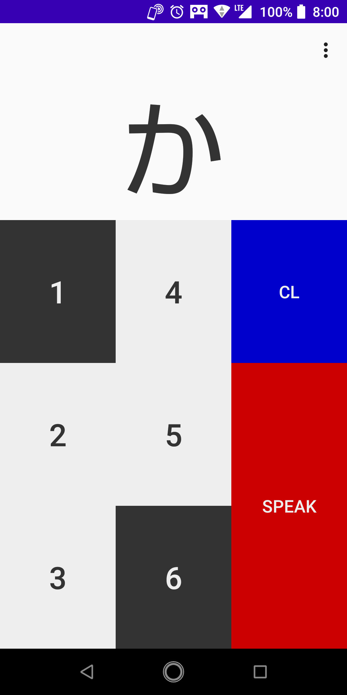

Bresso
シンプルなデザインの点字触読支援アプリです。
使い方
- [1] キーから [6] キーのいずれかのキーをタップして、点字を入力します。
- 例えば、 [1] キーと [6] キー（「か ⢁ 」に対応）をタップすると、画面の上部に「か」と表示されます。
- ひらがなが表示されているときに、 [SPEAK] キーをタップすると、その文字を発音します。
- [CL] キーをタップすると、全ての点の選択が初期化されます。

謝辞
このアプリは、「あみたろの声素材工房」の声素材を使用しており、声素材の著作権は、あみたろ様に帰属します。
ダウンロード
このアプリは Google Play で入手できます。広告なしで、すべての機能を無料でご利用できます。